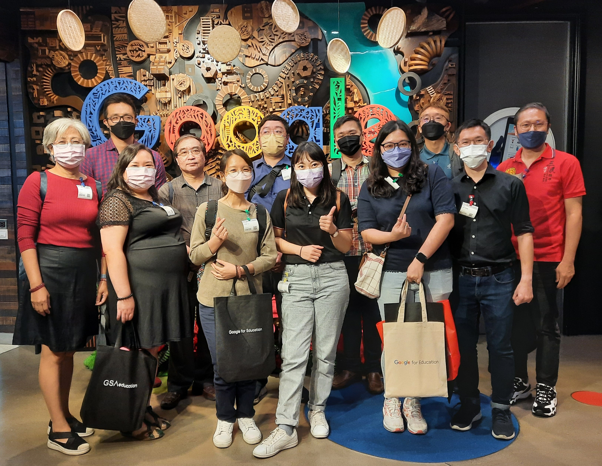

Google for Education分享会——上学新篇章
部分与会者在吉隆坡谷歌办公室合影。董总与Google和GSA Education联合举办Google for Education分享会——“上学新篇章”（School in A New Light）。此分享会于2022年9月6日上午10时30分，以线上线下混合方式进行，吸引141人参与，当中123人来自32所华文独中，并邀得三位教育工作者分享如何运用Google for Education，让教学现场有个全新的教育体验。
巴生兴华中学朱伟杰老师分享学校如何在防疫不停学的情况下，通过谷歌课室平台（Google Classroom），让师生的教学空间从实体课室转换到线上课堂。新冠疫情爆发后，学校将危机变为转机，透过谷歌课室平台整合教学资源，使用线上作业和辅助教学工具（Kahoot!、Quizizz、ClassDojo、Jamboard）等作为教学和评量记录。此外，学校在后疫情时代也积极推行混合式教学（Hybrid Learning），继续运用谷歌课室平台作为课后的讨论空间。
循人中学资讯处副主任蔡曜阳老师则分享学校透过Chromebooks和Google Workspace for Education云端协作工具，建构未来课室，打造丰富的教学环境，以带动课室里的学习气氛。学校选择Chromebooks的主要原因是操作界面简单，可透过网页版管理控制台，轻松地部署和管理装置。对于升级至Education Plus的考量因素，则是云端存储空间增加、享有Google Meet录制功能，以及会议参与者人数上限增至500人。
Arus Academy的联合创办人和课程主任戚尚骏分享如何搭配运用各种Google工具来辅助学习，以达致低端技术能发挥高效影响（Low-Tech High-Impact）的教育效果。Google Workspace for Education云端协作工具容易使用，譬如Google Sites协作平台可以建立个人网站。教师和学生可以快速掌握，灵活运用Google Forms、Google Classroom、Google Analytics、Data Studio和Google API等提高教学品质，充实学习体验。
此分享会促进了各校之间在信息科技领域的互动交流，塑造后疫情时代的教育新常态。与会者希望往后能举办Google API工具应用的培训活动或工作坊，以及更多其他的分享活动。